Journal
Approved application · approved logoEvery image below is an actual canonical PNG. Open an image for its full resolution. These are authored design scenes, not current-app browser captures.
Turn entry into a page · ready
convert-readyActions and implementation pointers
× · Cancel · Convert to page
apps/web/src/app/(app)/journal/_components/journal-list.tsxapps/web/src/app/(app)/journal/_components/journal-entry-convert-to-page.tsx

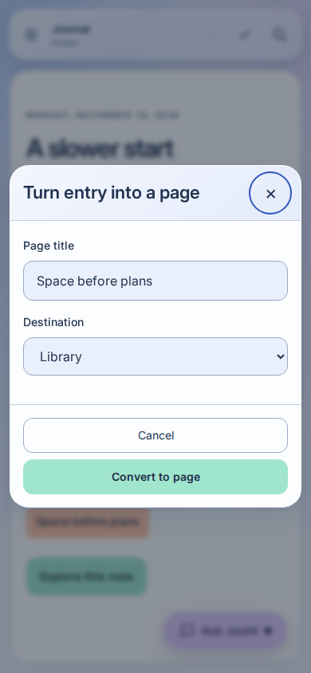
SHA256 752de1feff4201bbf72a517e8e23bec166f0cf22f681f524353fc69a7cce967e

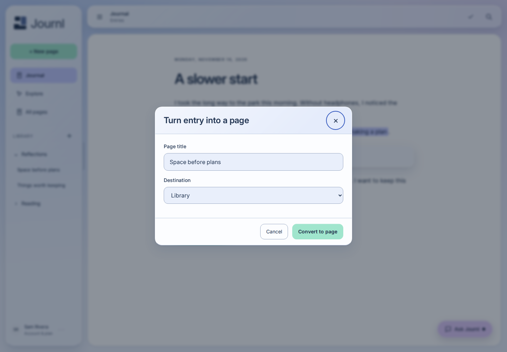
SHA256 629f4d423c725e99d6701fca8f9f61b6f19bbb1e67d4c8090f7ab10c3be11113

SHA256 f0ab9818aabca5ee35e049bc9148901ab95789b2bb1dfdd7b885887ebf2a1ff0

SHA256 37f24760cc78e3bc99a01b7c61e04e2ad18ad8df66cc625aed06acd72a8f7e05
Turn entry into a page · pending
convert-pendingActions and implementation pointers
× · Convert to page… · Cancel
apps/web/src/app/(app)/journal/_components/journal-list.tsxapps/web/src/app/(app)/journal/_components/journal-entry-convert-to-page.tsx

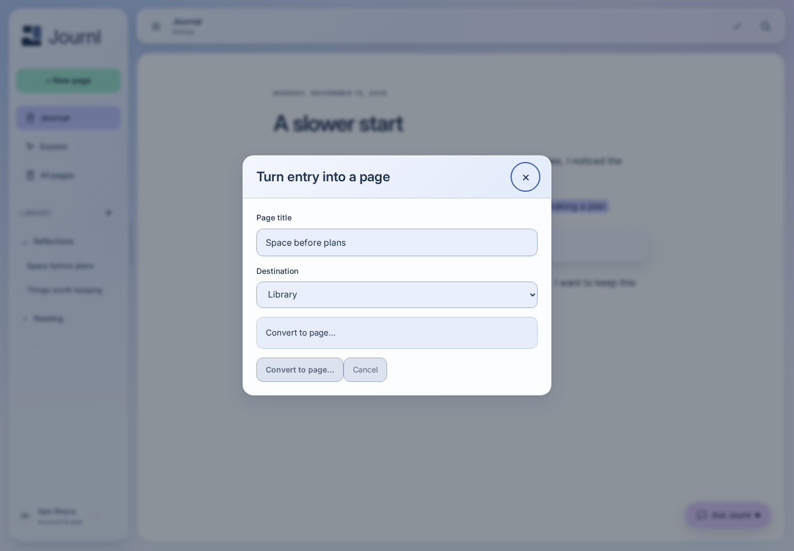
SHA256 e2866d2a08814302a7e32a9259c38b7cd002b60a153dc7c96a5882ad2ce561ef

SHA256 fd28f0874c320099ba5f2d94e0cb731db4b4af9eef5c634e9705d45f5b5c54cb

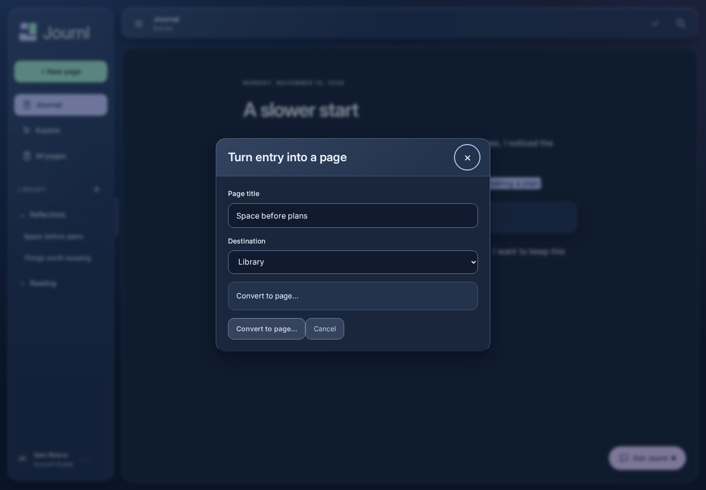
SHA256 eeae5721d37ff30140495cf5268bcb83f4cdc3e846cf2b6e516ed81b326b30e9

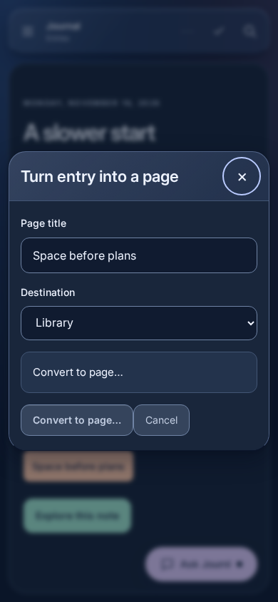
SHA256 978bc7dcde2e84fb103db6db92487d33a660a472be40e0df331e1e673d36c091
Turn entry into a page · error
convert-errorActions and implementation pointers
× · Cancel · Convert to page
apps/web/src/app/(app)/journal/_components/journal-list.tsxapps/web/src/app/(app)/journal/_components/journal-entry-convert-to-page.tsx

SHA256 8cca5525405bc6b5020086223e32a3e0a9ad1d98a66c52baee9fb580ce709e96

SHA256 07538fa294239c95be604dd617d6fca53348a274423131559c195ed5fb6f539e

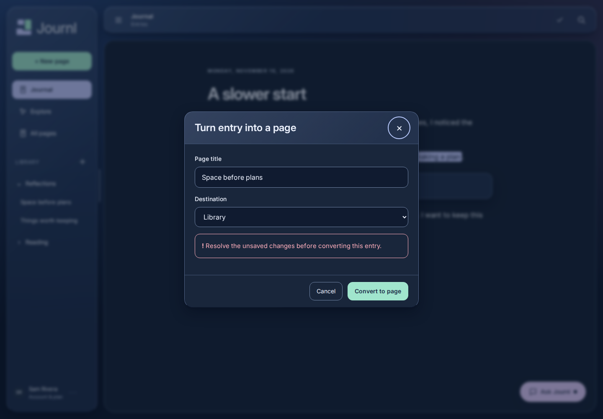
SHA256 3d9108880b4526729518ac42d12eb0b1b18ec3d37904bd8be30ca1c2b062c194

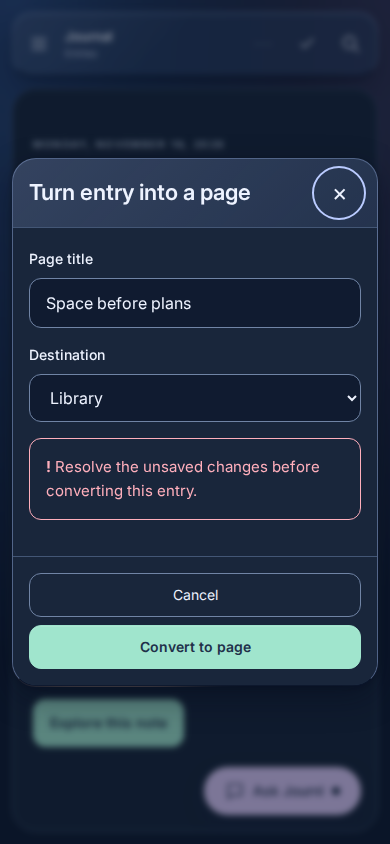
SHA256 50404cb0feecb081d9903329a10654a1d3130fbc3745eaaf6abf0c190680f451
A title is needed
convert-title-validationActions and implementation pointers
× · Convert to page
apps/web/src/app/(app)/journal/_components/journal-list.tsxapps/web/src/app/(app)/journal/_components/journal-entry-convert-to-page.tsx

SHA256 483df8e19c1b0a8d14ce8ed14102f17a196d6b2b0729ca7eff764dde3bf5d3cf

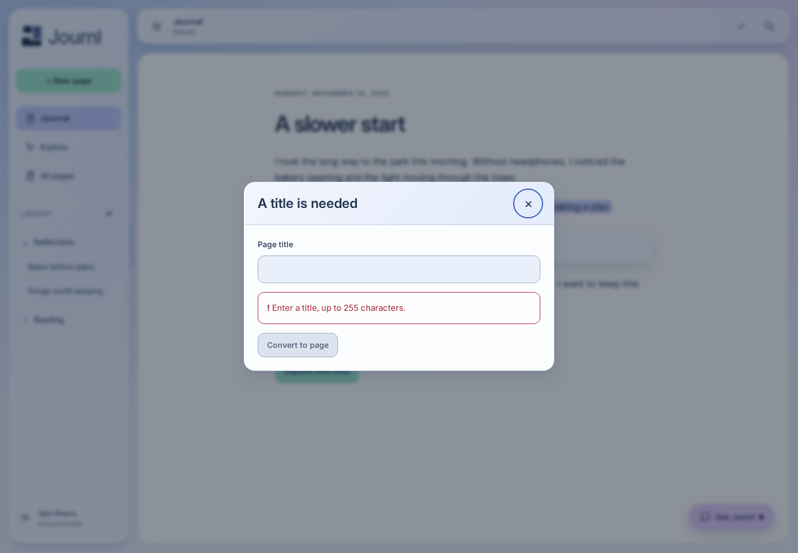
SHA256 6060b6f27fcd086c7775ebb838f2b0be3e628187d428d25442a016289022c432

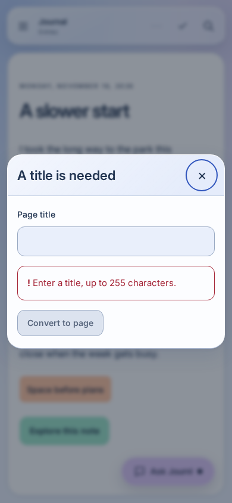
SHA256 6dd85f0ff49c8e788ad5396e84979f210411d1aa230921f292d7589bc1b2222d

SHA256 a70d541edca1d3440140ff75e9f75f7e21e1a88ce895e083cae415bdf0ef19d3
Choose destination
convert-destinationsActions and implementation pointers
× · Library · Reflections · Reflections / Notes · Reading · Cancel · Convert to page
apps/web/src/app/(app)/journal/_components/journal-list.tsxapps/web/src/app/(app)/journal/_components/journal-entry-convert-to-page.tsx

SHA256 448250f3f523c1bbbc964a011ae555ba865148373400f6233498d279fbf26b94

SHA256 c4483ac7a12dc43c6c03691aad7b4a4894cafd2bad0565d74c14b71abf05b7f7

SHA256 77cd98836b85562dab200c70f276b6adeee049dc5dc39955c78034933b0a90f2

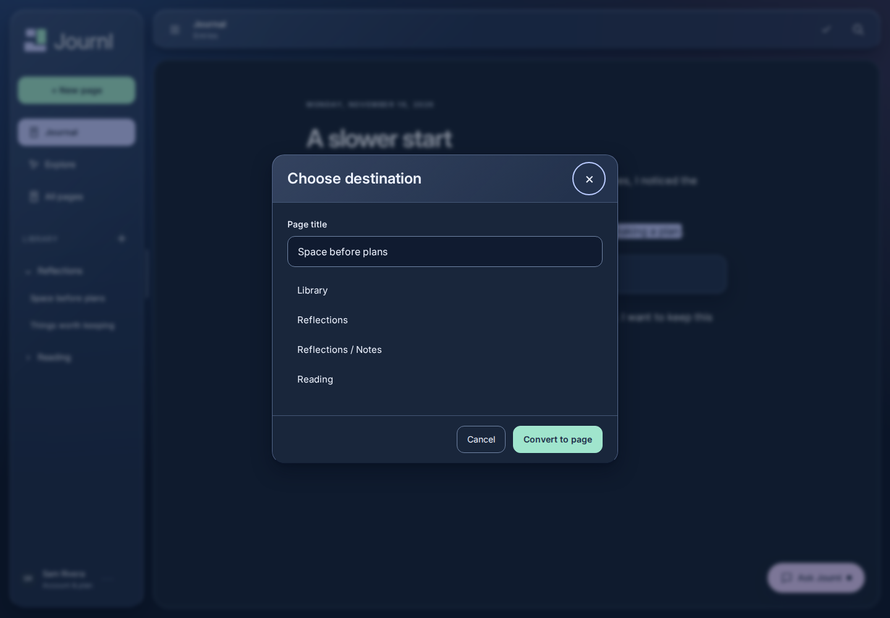
SHA256 b9b6fb059baa7c74f69788941cb3e26d429b1fec90a9ea04f4a8b7657fdc844b
The saved entry changed
convert-version-errorActions and implementation pointers
× · Cancel · Review draft
apps/web/src/app/(app)/journal/_components/journal-list.tsxapps/web/src/app/(app)/journal/_components/journal-entry-convert-to-page.tsx

SHA256 e2e72a7ec1027d8fc4d11bf839f62b53be8ba2784ff1c98a1f21b6953f7adb00

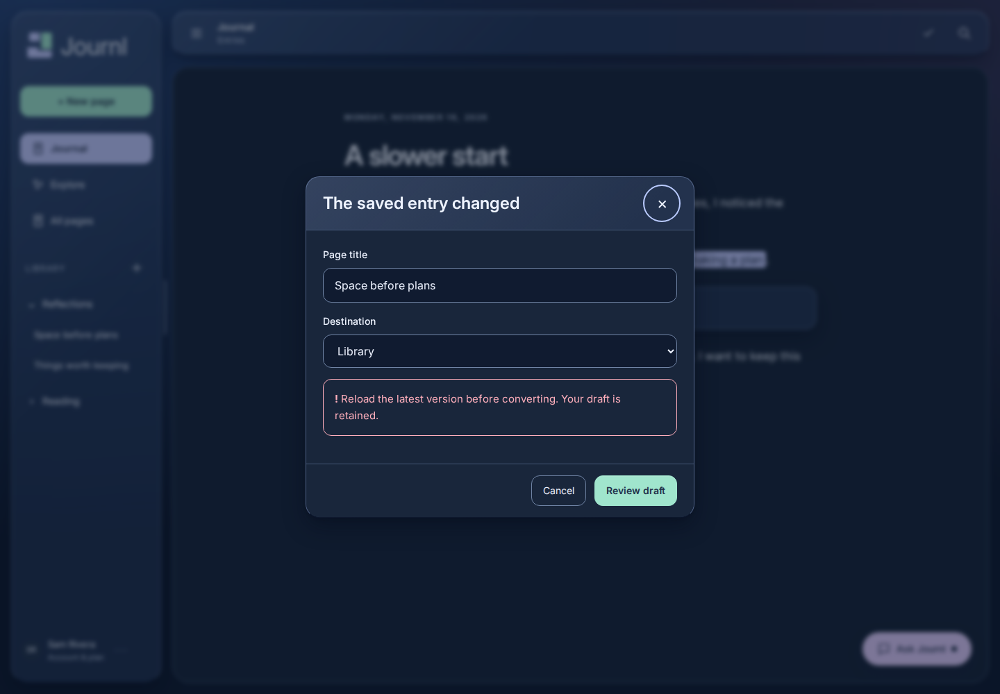
SHA256 b0c057d5c96d0c2f1c76571227a0358b9fedccefdec6f5dae5d89705fa028010

SHA256 94b156068ea1bf05506a18f2ea4c28ad716d0bdfaed7b67fd551e24d1a43f4d4

SHA256 cc3e565173d6a4922a806c14417dddf65eb60abaafebae26f503c69b5d9bd7da
The idea has a new home
convert-successActions and implementation pointers
+ New page · Journal · Explore · All pages · ⌄ · Reflections · › · Reading · Return to Journal · Open page · Ask Journl · Today’s Journal · Close · Instant · Thinking
apps/web/src/app/(app)/journal/_components/journal-list.tsxapps/web/src/app/(app)/journal/_components/journal-entry-convert-to-page.tsx

SHA256 9b8132e8d5055e14f94e14f7cc324011c1825679b34ed05d65c3496f082454d6

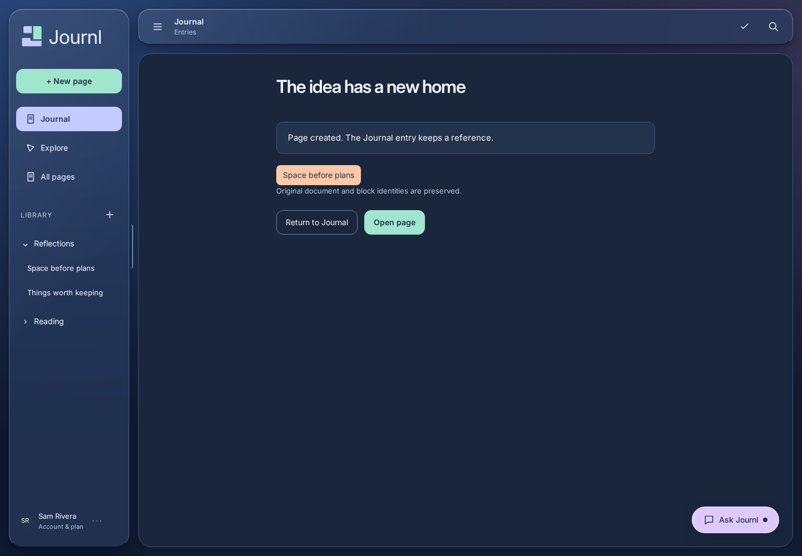
SHA256 babe925dc4abf30229a01c49e011c1fb7f5f797e062cf608b979858138ac356f

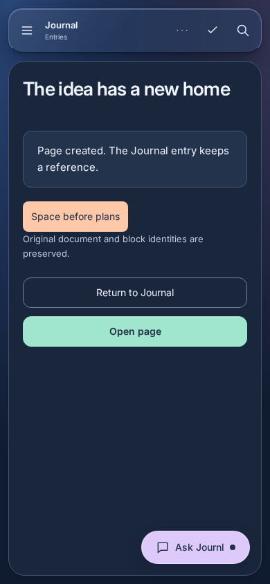
SHA256 5675edc26b5765cd21ae3d08cd8d32ff4233d3cc788f5ddef19e9c526689ee06

SHA256 b71927932c7817c0706c56105367974672bc513e54604a1d15969589651d56b5